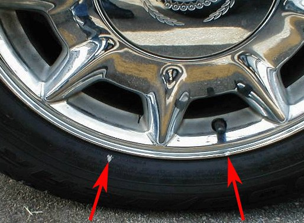
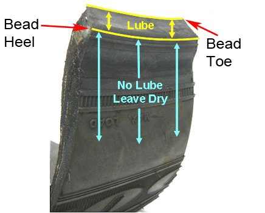
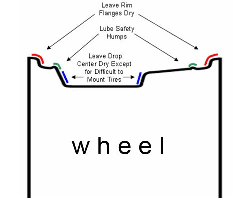
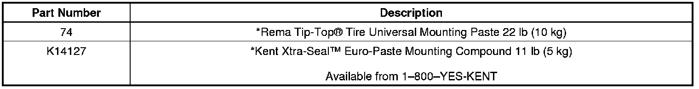

Tires/Wheels - Vibration Shortly After Tires Are Mounted on Rim
INFORMATIONBulletin No.: 12-03-10-001
Date: March 23, 2012
Subject: Vibration Shortly After Tires are Mounted/Preventing Vibration from Wheel Slip (Tire Sliding on Wheel)
Models:
2013 and Prior GM Passenger Cars and Trucks
Information: Vibration Caused by Wheel Slip
A customer concern of vibration shortly after having a tire or tires mounted may be caused by slippage of the tires on the wheels, placing the imbalance point of the tire away from the weight location.
Wheel slip is a condition that occurs when the tire slips and rotates on the wheel during acceleration or braking. This can cause the assembly to become imbalanced and result in the customer returning with a vibration from the tire/wheel assembly. Wheel slip is most common on clear coated or chrome wheels with very smooth bead seat areas, but may also occur on other alloy or steel wheels. Most slippage occurs immediately after mounting.
Using preferred tire mounting lubricants and proper lubricant application techniques can prevent wheel slip from occurring.
Wheel slip normally occurs for the following reasons:
- Excessive amount of lubricant used or lubricant applied in the wrong locations.
- Improper lubricants, non-preferred lubricants or improperly diluted lubricants may contain excessive moisture or components that do not dry sufficiently, resulting in an interface between the tire and rim that is excessively slippery.
Checking For Wheel Slip
Vehicles that return immediately with ride disturbances and out of balance assemblies should be checked for wheel slip. Wheel slip can be checked by placing a temporary mark on the tire at the valve stem. After driving the vehicle, if the wheel slip is less than one inch, then wheel slip is probably not contributing to a ride disturbance. When wheel slip is greater than one inch, and you felt a ride disturbance on the test drive, then wheel slip may be causing the vibration.
Note
This diagnostic test will only be effective if the vehicle has been serviced within the last couple of hours.

Best Practices to Eliminate Wheel Slip
Wheel slip can usually be prevented with the proper application of tire mounting lubricants in a controlled and consistent manner. The following are some recommended best practices for eliminating wheel slip.
1. Prior to the tire installation, clean the tire changer's wheel-contact parts of any excess lubrication, dirt or grime.
2. Clean the bead seat areas of the wheel of any leftover lubricant used to demount the tire.
3. Inspect the tire to be installed and clean any manufacturing related lubricants from the bead area as necessary. Use an approved rubber cleaning fluid that would commonly be used during the tire repair process.
4. Do not use products containing silicone, alcohol, petroleum based products, solvents or corrosives for cleaning or lubrication.
5. Lubricate the tire and wheel as shown in the following illustrations. To eliminate wheel slip, the tire beads should normally only be lubricated from "heel to toe." Lubricant applied outside the heel to toe zone will cause the tire to have reduced grip on the wheel and increase the likelihood of slippage. When lubricating the wheel, lubricate the safety humps, leave the rim flanges dry and lubricate the drop center area only for difficult to mount tires.
6. When additional lubrication is required during mounting to prevent tire damage, the excess lubricant should be wiped or cleaned from the tire bead area and the wheel bead seat area before inflating to seat the beads.
7. The mounting process must be completed within 10 minutes of the application of the mounting lubricant. Evaporation of the mounting lubricant after 10 minutes may prevent proper bead seating.
8. Inflate the tires to 275 kPa (40 psi) when mounting, then reduce the air pressure to the desired operating pressure.
9. Place a temporary mark on the sidewall of the tire at the valve stem.
10. Rebalance the tires and mount on the vehicle.
11. Park the vehicle for one hour to allow the lubricant to evaporate.
Note
Technicians should not brake or accelerate quickly when moving vehicles from the hoist to the parking lot.
12. Test drive the vehicle to confirm the ride disturbance has been corrected. Confirm that the mark on the tire is still aligned with the valve stem locations and remove the temporary mark. The above photo shows the possible amount of slip.
Preferred Lubricant Recommendations
To minimize rim slip, always use commercially available lubricants made for bead seating to assist in tire mounting. Paste type lubes are recommended because the application can be better controlled and paste type lubes will not drip onto areas that should not be lubricated. If lubricants that require dilution are used, be sure to carefully follow the lubricant manufacturer's instructions. Under diluted mixtures will not dry soon enough, which may cause wheel slip. Over diluted mixtures will dry too fast and may hamper proper bead seating.
Suitable paste lubricants include Rema Tip-Top(R) Tire Universal Mounting Paste if available in your area, Kent Xtra-Seal(TM) Euro-Paste Mounting Compound or equivalent. The Kent product is distributed nationally. Contact 1-800-YES-KENT for additional information on this product.
Important
When mounting the tires, rubber lubricant must be used. Also, the vehicle should not be driven aggressively (hard acceleration or braking) for up to 24 hours after tire mounting to allow the lubricant to dry. Failure to do so may cause the tire to slip on the rim. This condition will affect wheel balance, which could result in a vibration.
Tire Lubrication
Lubricate the tire as shown in the following illustration. To eliminate wheel slip, the tire beads should normally only be lubricated from "heel to toe." Lubricant applied outside the heel to toe zone will cause the tire to have reduced grip on the wheel and increase the likelihood of slippage.
Tire Bead Lubrication

Wheel Lubrication
The following diagram illustrates the recommended lubrication of the wheel to prevent wheel slip. Lubricate the safety humps. Leave the rim flanges dry. Lubricate the drop center area only for difficult to mount tires.
Wheel Lubrication Points

Customer Notice
It is advisable especially for customers who are waiting for their vehicle during servicing be made aware that recently mounted tires should not be driven on in an aggressive manner. It may take up to 24 hours before the lubricant is completely dry and tires achieve maximum adherence to the rims. No matter the style of driving exhibited during the drying period, no air loss, or other detrimental attributes are possible from this condition. Wheel slip relative to the rim is merely a customer dissatisfier due to the potential to induce undesired vibration.
Parts Information

*We believe these sources and their products to be reliable. There may be additional manufacturers of such material. General Motors does not endorse, indicate any preference for or assume any responsibility for the products from these firms or for any such items which may be available from other sources.

Disclaimer